Miniaturised Infrared Radiometer:
This project was my third year individual project (commonly referred to as "IP"). It provided me with an exciting and challenging opportunity to learn about the design of spacecraft scientific instrumentation, the potential of miniaturising existing components with the use of MEMS, and the challenges present when operating them in extreme environments.
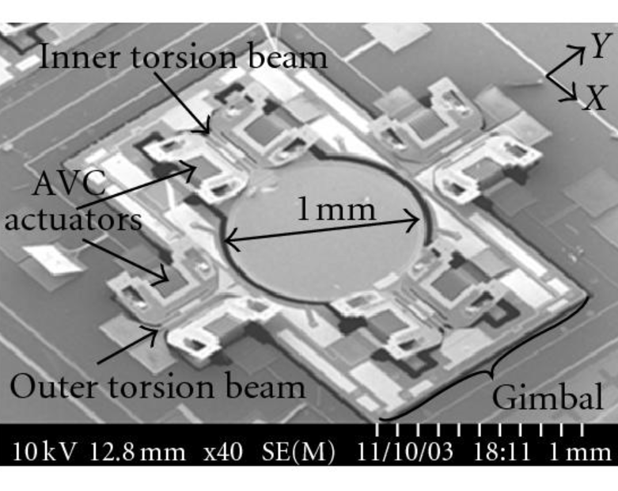Abstract:
Micromachined devices allow the construction of increasingly small scientific instruments. This is specially relevant for spacecraft instruments, which are constrained by very tight mass and volume requirements. One such proposed instrument is a miniaturized infrared (IR) radiometer designed to measure net thermal radiative flux inside Venus' atmosphere.
The change of net IR flux with altitude is equal to the IR cooling or heating at that altitude. This is directly related to atmospheric energy budgets and atmospheric energy transport. To measure this, the instrument must record the thermal radiative fluxes in both the upwards and downwards direction.
This instrument has a minimal number of components; the main ones being a thermopile sensor, a calibration source, and a MEMS light switch. The MEMS device has two states; in the first one, it reflects external atmospheric light into the sensor, and in the second one, it switches to another position to steer radiation from the calibration target into the sensor. This provides in-situ reference readings to calibrate the mirror while it descends through the atmosphere, correcting any measurement drifts.
This project concentrated on the light switch, developing a working prototype suitable to be used in follow up student projects that further develop the instrument. It also investigated the overall concept of the instrument.
1. Scientific Goals of the Instrument
Solar radiation input, as well as thermal radiation output from the hot atmosphere, are considered to be the dominant factors in the Venus’ atmosphere, driving its climate, weather and chemistry, as well as cloud formation [V. Titov et al., 2007]. It is therefore important to quantify how these inputs and outputs vary throughout the atmosphere with altitude, latitude and longitude. This radiative energy deposition can be obtained from the net radiative flux density, defined as the radiative flux density measured in the zenith direction, minus the radiative flux density measured in the nadir direction [Revercomb et al.,1985].
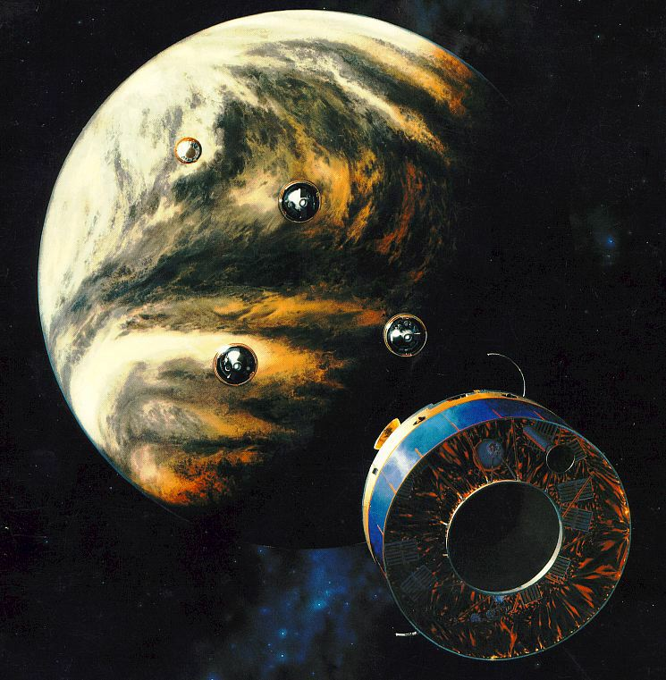Deposited radiative power measurements can be correlated with other atmospheric measurements to determine the structure of clouds and the presence of particles or specific gases in the atmosphere. Venus, globally, is in a state of apparent thermal equilibrium, but when small sectors are considered, there’s a noticeable energy imbalance. The radiative output of the planet in the form of thermal radiation is relatively constant across all latitudes and longitudes, but the radiative solar input only occurs on the day side of the planet, being strongest near the equator, and decreasing towards the terminators and the poles. This strongly suggests that there are atmospheric transport mechanisms distributing the solar input across the poles and terminators, onto the night-side of the planet. Measuring the flux balance at different points can be useful to correlate the force of these transport mechanisms and relate them to atmospheric circulation patterns measured by other methods [Sromovsky et al., 1980].
2. Instrument Description:
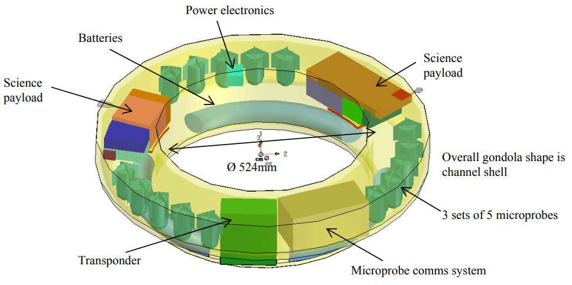The infrared radiometer concept studied on this project is based on the wideband light sensor concept devised for the DALOMIS Microprobes mission concept (2004, ESA). When it was published in 2004, many of the technologies required were still in their infancy. Some of these technologies, such as diamond optical components, or MEMS devices, have considerably matured since then. This project concentrates on the characteristics and operation of the light switch, although the other components are briefly described in this section.
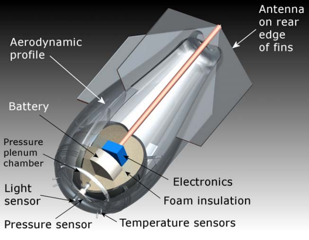The detector has to work reliably in the hot environment (up to 50ºC) inside the instrument. Cooled detectors like bolometers and ferroelectric detectors require cryogenic temperatures to function. This is outside the mass constraints of the microprobe. Pyroelectric detectors have been used in IR radiometers in the past. Uncooled thermopiles have been shown to work reliably throughout broad temperature ranges [Foote et al., 1998]. This was the subject of study of a related project conducted by another student and is therefore not considered in this project.
The calibration target must be able to emit a characteristic and uniform broadband signal. In the past, this has been done by resistively heating components that approximate blackbody radiators, which radiate power per the Stefan-Boltzmann’s law. This is an expensive process, both in terms of power, and time. These devices require a lot of energy to reach high temperatures (∼ 1000 K). Time needs to be allowed for their thermal masses to heat up and cool down to avoid interference with other parts of the instrument. Micromachined silicon filaments can be employed as radiation sources to calibrate the sensor [Tu et al., 2003]. These can be heated up to 1200 K, providing excellent reference signals. Their warm-up and cool-down times are in the order of miliseconds, and they only require a few watts to function.
The light switch is a micro-electro-mechanical mirror. Actuation principles vary from device to device. Each of these principles carry specific constraints and advantages that only apply to said type of MEMS optical switches. These devices are commonly used as scanning mirrors that operate in resonant mode to display images in a Lissajous pattern style, or to survey distances in conjunction with a laser beam (LIDAR).
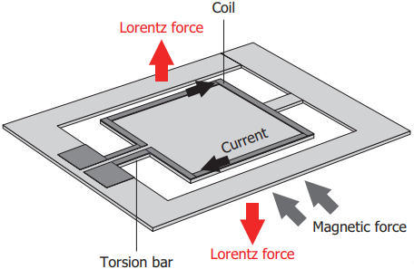It was decided to employ an electromagnetically (EM) actuated mirror. Their main advantage lies in the linear current-deflection curve that they follow, which means that they can be operated with a simple driver circuit. Piezoelectric actuators were discarded due to their poor linearity. The low drive voltage was also an advantage of EM devices. Electrostatic (ES) devices require high voltages to operate, while EM devices can be directly driven from a microcontroller. Another advantage of EM devices is that, in point-to-point operation, they can achieve greater mechanical deflection angles than ES devices (±15º vs ±5º). This provides more flexibility when designing optical systems involving them.
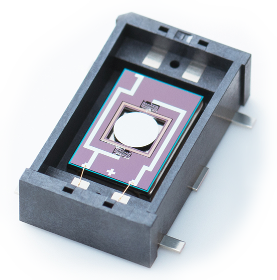The S12237-03P, manufactured by Hamamatsu Photonics proved to be the best suited light switch for the radiometer instrument. It is an electromagnetically driven device with an optical deflection range of ±15º. The mirror has a diameter of 2.6 mm and is coated with a film of protected aluminium. It has an optical deflection curve of 1º/mA (±10%).
The instrument concept is composed of one micromirror, one calibration target, and two thermopiles. The disposition devised allows both sensors to measure their respective fluxes at the same time. The micromirror, in the idle position, reflects the signal from each light guide into its respective sensor, while the calibration signal is reflected back into its source. To calibrate a detector, the mirror tilts, and the calibration target signal is aligned with the detector. Both zenith and nadir rays are placed in such a way that they exit through the opposing side during the calibration of both sensors.
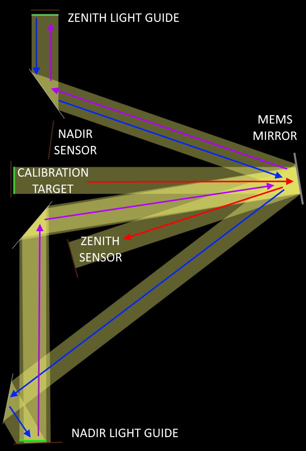 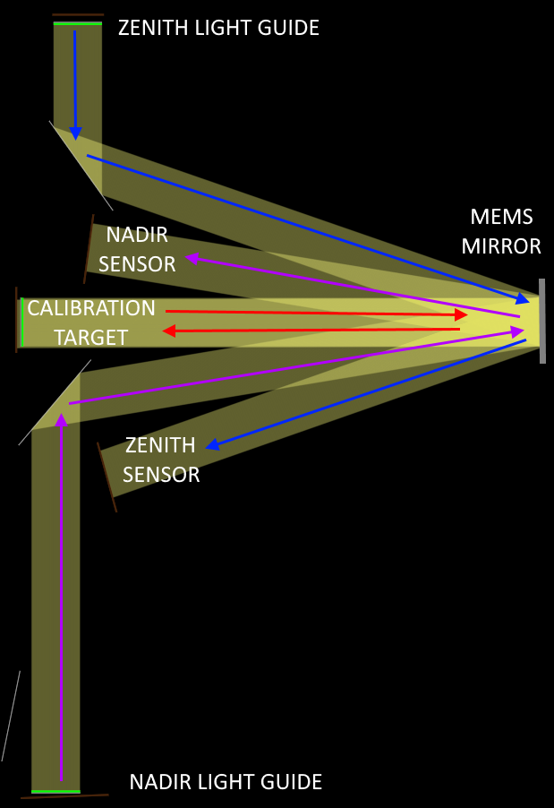 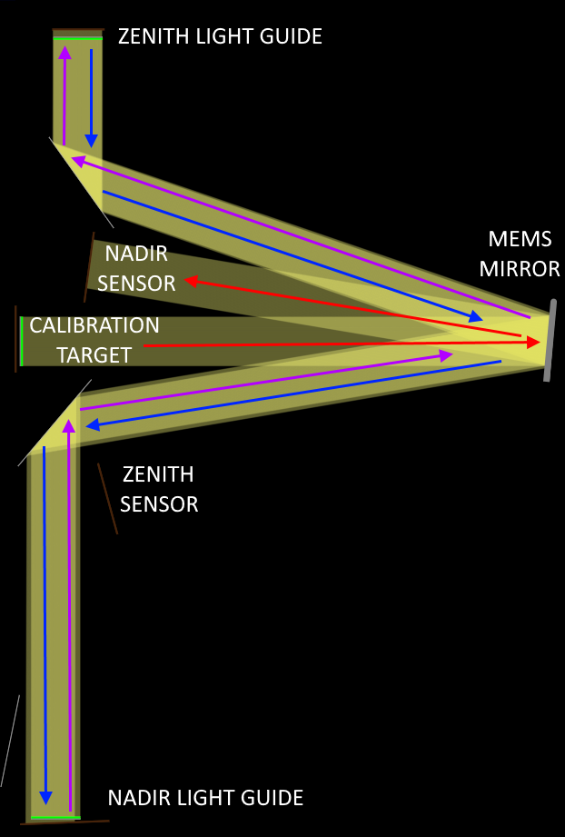3. Micromirror Coating:
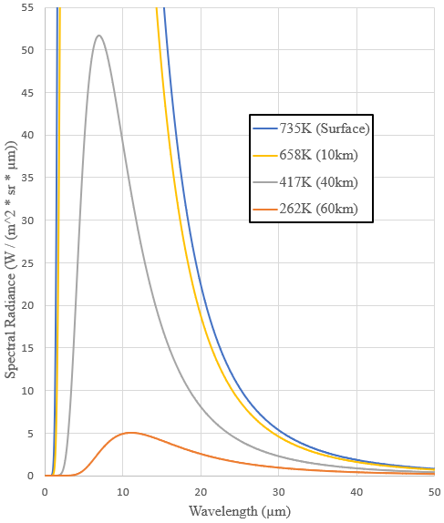 The scientific goals require the mirror to be coated with an appropriate material that is very reflective in the spectral region of interest, roughly spaning from 3 µm in near IR (NIR) up to 50 µm in far IR (FIR). A metallic coating was determined to be the best option for this application, since they generally remain very reflective over wide spectral ranges, angles of incidence and polarity, in contrast to dielectric coatings [Cushing, 2011].
On paper, silver seemed to be the best option, with excellent reflection from 400 nm onward. However, this metal was discarded when all of its drawbacks where compounded. Its reactivity with sulphides meant that it was virtually impossible to handle the mirror unless it was placed in a sealed and inert environment, adding a lot of complexity. After carefully examining the other options, unprotected gold was selected. Gold offers an excellent reflectivity (>97%) from 1000 nm onward, slightly better than aluminium, while covering entirely the region of most interest for the instrument, located in the thermal infrared (8-15 µm). It was decided not to add a protection layer to avoid adding extra absorption bands, considered highly undesirable for the instrument.
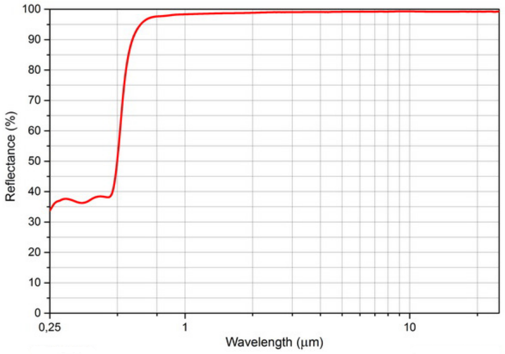The required gold layer thickness was evaluated by calculating the skin depth of the material. An electromagnetic field propagating in a metal attenuates by a factor of 1/e each time it travels one skin depth. The relative intensity of this field, attenuates by a factor of 1/e^2 each time it travels that same distance [Bass et al., 2009]. The percentage of the impinging radiation that passes through it without being reflected or absorbed, known as transmittance (τ), decreases exponentially as the coating thickness increases.
For a layer one skin depth thick, 13.53% of the radiation is transmitted. Two skin depths drops it to 1.83%. For three, only 0.24%. Four skin depths only allows 0.03% through. To validate these numbers, they were compared to the gold layer deposited on the James Webb Space Telescope's mirrors. These mirrors were made out of beryllium, with a 100 nm layer of gold deposited on it. 100 nm is equal to 3.11 skin depths for a wavelength of 50 µm. This thickness yields a transmittance of 0.19%, while it equals 49.23 skin depths for a shorter wave of 200 nm, which in turn means a transmittance of order 10^-43. It was decided to imitate the JWST and proceed with a layer of 100 nm.
The mirror was coated inside the University's nanofabrication cleanroom using a resistively heated phyisical vapour deposition machine. The process took about two hours and required extreme caution since the mirror had to be precisely masked by hand.
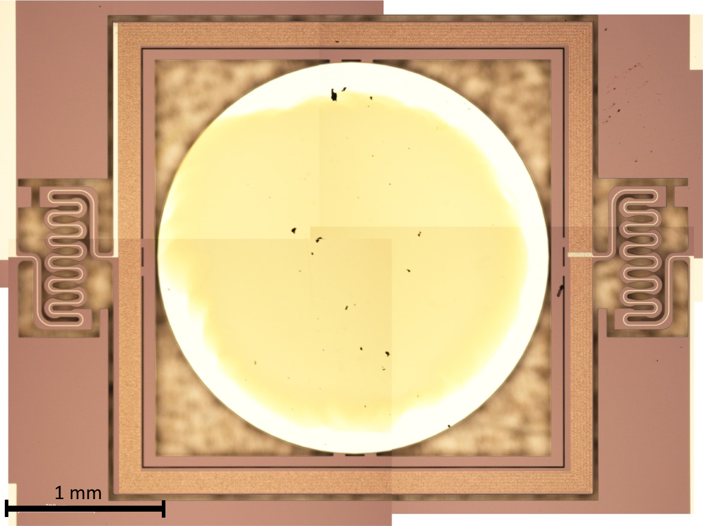
The result of the process was highly satisfactory, considering how hard it was to precisely align the masking. The coated area is a circle of roughly two milimiters in diameter.
4. Micromirror Driver Circuit:
The mechanical deflection angle of the mirror is linearly proportional to the current that flows through the coil. It was therefore necessary to create a controller that was able to supply the required range of current values to reliably tilt the mirror in both directions. The micromirror driver circuit built for this purpose is composed of five separate components.
4.1 Constant Current Source:
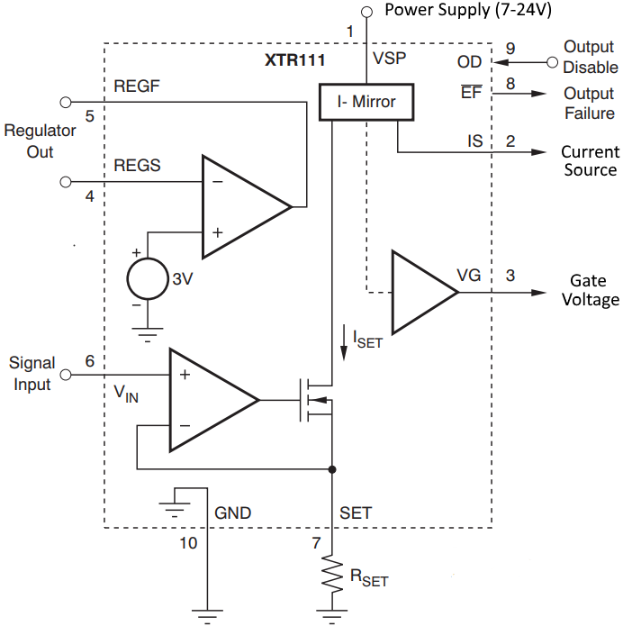To drive the mirror to a fixed deflection angle, the power supply must continually regulate the output voltage to maintain the current steady as temperature changes, either due to external influences, or due to power dissipation from the coil itself. Current mirrors are circuits that take a known current signal from an isolated loop, and copy it on an external loop, regardless of the impedance on that loop, as long as the power supply can support it. The XTR111 from Texas Instruments is a precision voltage to current converter integrated circuit (IC) that employs a current mirror to output a current signal. It is commonly used to transmit signals over long distances in the form of current values, since current remains constant on a loop, while voltage decays due to the resistance of the wires. This IC amplifies by a factor of ten the current flowing through the internal loop, and then copies it onto the external loop.
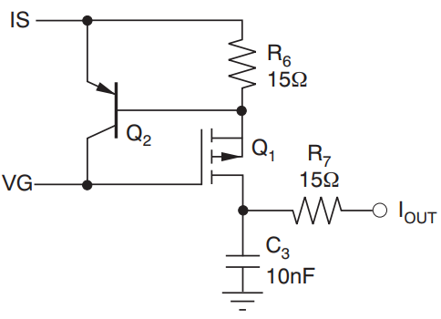A gate-controlled current limiter was added to protect the XTR111 output. During normal operation, current flows through a 15 Ω resistor (R6) and through an enhancement type P-Channel MOSFET (Q1). R6 is placed in parallel with a PNP transistor (Q1) to limit the current when the voltage drop across R6 is approximately equal to the saturation voltage of the transistor. When this saturation voltage is reached, the transistor is switched on, allowing IS to flow directly into the gate of the MOSFET. This gate is normally closed, since it is connected to the Gate Drive (V G) output of the chip, which produces a negative voltage. When the transistor is turned on, the voltage seen by the gate increases to a value where the MOSFET desaturates, opening the circuit and protecting the XTR111 from overcurrent. The purpose of R7 and C3 is to limit the discharge rate of the MOSFET and reduce the steepness of changes if the gate state changes.
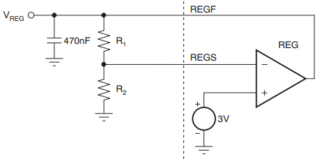This XTR111 features a voltage regulator that can be tailored to provide a clean and stable reference voltage for other devices, and output up to 5 mA. The regulated voltage (VREG) depends on the two inputs of the OpAmp. To obtain a reference of 5 V, R1/R2 is required to equal 2/3. The values employed on the design were 5.6 kΩ and 8.2 kΩ respectively, which gives out a ratio of 0.683, producing a reference voltage of 5.048 V.
A PCB to support the XTR111 IC and the other required components was designed on EasyEDA according to the guidelines provided in the device datasheet and fabricated at the university's electronics workshop. Testing was performed to ensure the circuit operated as expected. The output current was measured over the whole range of input voltages (0 - 5 V). These measurements correlated the expected transfer function.
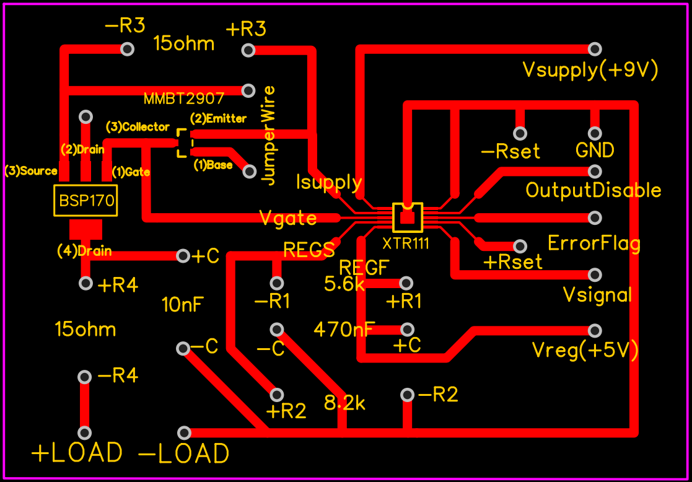The circuit was tested to confirm that it operated as expected. The output current was measured over the whole range of input voltages (0 - 5 V). These measurements confirmed the expected transfer function of 3mA per volt.
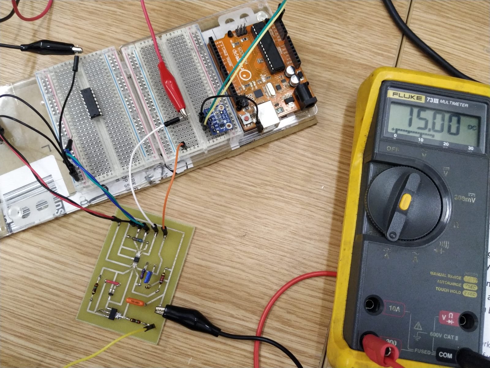4.2 Current Reversal Circuit:
The second element of the micromirror driver was a circuit capable of reverting the polarity of the voltage across the mirror's coil, allowing it to tilt in both directions. “H − Bridges” are commonly used in order to reverse the spin of the DC motors. They are composed of four switches, usually solid state gates, arranged in a way that depending on the state of each switch, allow the current to flow through the load in one or another direction.
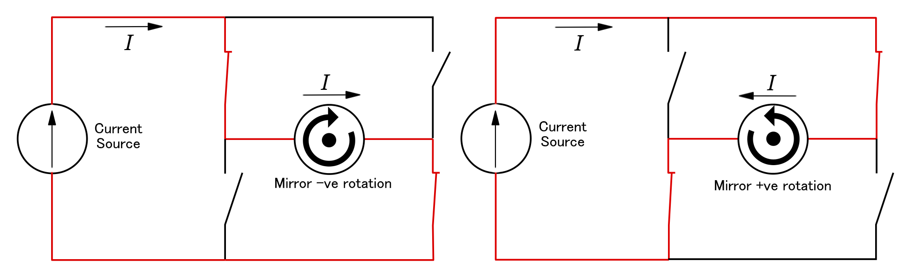One such device is the DRV8838 Low-Voltage H-Bridge from Texas Instruments, with a design load voltage range of 0 to 11 V. The direction of the current flow between the pins "OUT1" and "OUT2" depends on whether the inputs "PH" and "EN" are pulled LOW (0V) or HIGH (5V). Another PCB was designed in EasyEDA to support it and its I/O connections. This circuit board was also printed at the university's electronics workshop.
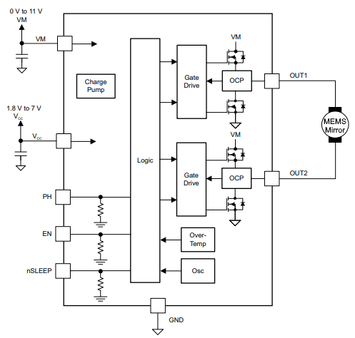 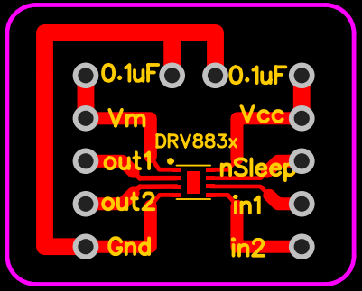 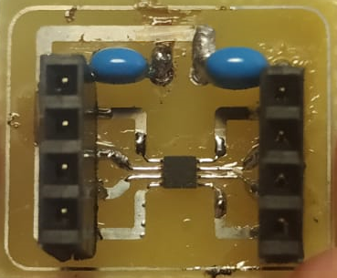4.3 Digital to Analog Converter:
The third component of the micromirror driver is a circuit known as a Digital to Analog Converter (DAC). These devices take a reference voltage (Vref ) and a discrete digital signal (Between 0 and 2Q − 1, where Q is the DAC resolution in bits) as input, and output an analog voltage proportional to that signal and reference voltage. The purpose of the DAC in this case is to allow the micro-controller to produce the range of analog voltages (0 - 5 V) required to operate the current source.
The employed DAC is the MCP4725 from Adafruit, which is a 12 bit DAC that is commonly employed in combination with microcontrollers. A 12 bit resolution means that the output can take 4096 discrete values(0 to 4095). For a reference input of 5 volts, this means that the device can output any values between 0 and 5 V that are multiples of 1.221 mV. This device was selected since it provides excellent resolution, and communicates with the controller via an I2C interface, simplifying the code. To provide the 5 V reference input, the device was connected to the output of the XTR111’s voltage regulator. This provided a stable and noise free reference.
4.4 Micromirror PCB:
The MEMS device had to be soldered onto a PCB to connect it to the rest of the circuit. Another circuit board was designed and manufactured for this purpose. The soldering of the MEMS device had to be done under very specific conditions, below 260ºC, and for no more than 10 seconds at a time. The permanent magnet inside the device complicated the soldering process, since It’d stick onto the tools employed. To circumvent this, the PCB with the mirror unsoldered on top were placed on top a big slab of iron, which magnetically held the mirror in place while it was soldered.
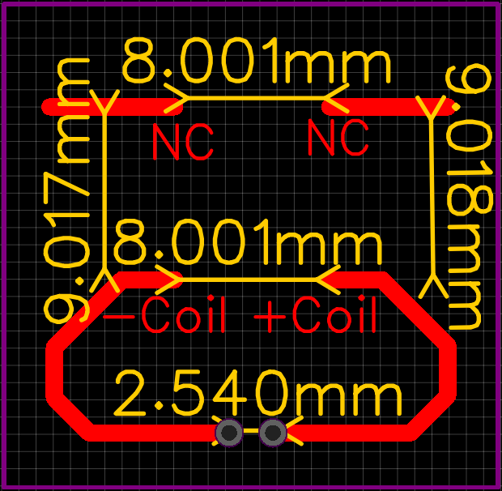 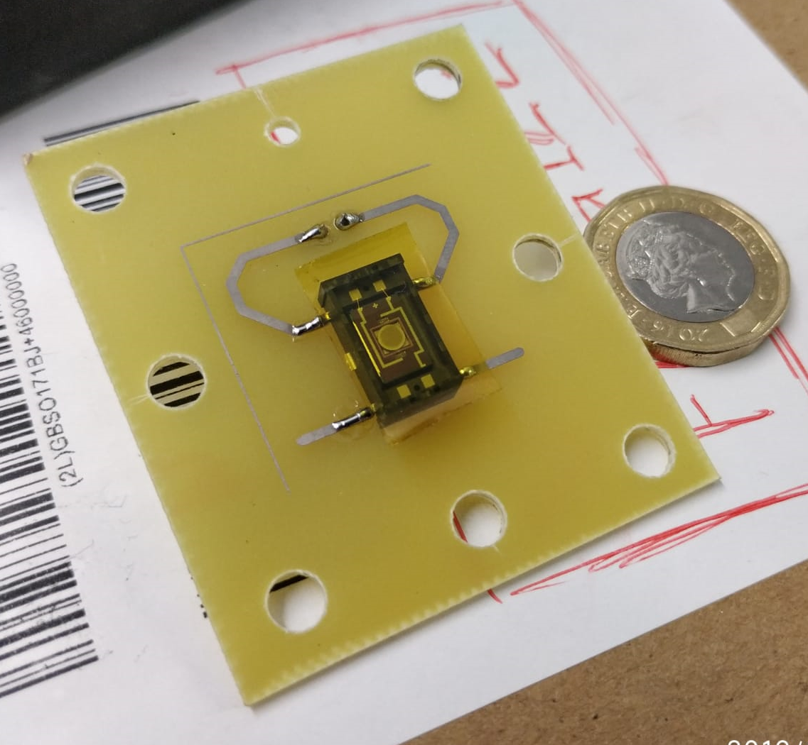4.5 Microcontroller:
The final piece of the system is the microcontroller. An Arduino Uno was chosen due to familiarity with the device and the code, but other devices such as a Raspberry Pi could have been similarly employed. The microcontroller accomplishes three tasks:
• Drives the DAC, which drives the XTR111 to produce the desired current output by sending digital signals.
• Enables the H-bridge by sending a 100% duty cycle signal to the nSleep pin, as well as determines the current polarity at the mirror’s coil by sending 0 or 100% duty cycle signals to the Phase and Enable pins.
• Process voltage and current measurements and displays them on a small OLED screen. This is useful to monitor and record data on the performance of individual elements of the driver circuit, as well as to produce plots out of that data. The current and voltage readings are produced by a pair of INA219 DC current sensors, which communicate with the microcontroller via the I2C bus.
4.6 Assembled Driver Circuit:
The block diagram of the full circuit is as follows:
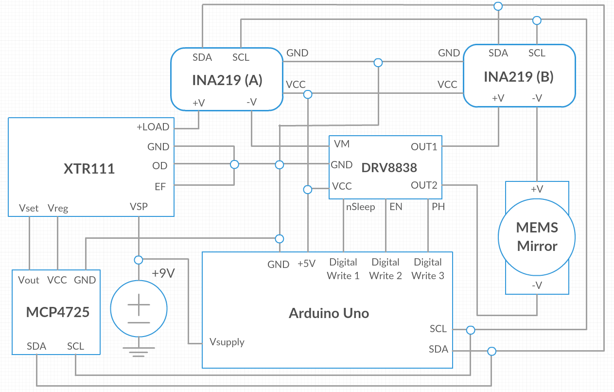The circuit was assembled on a purpose-built chassis that allows easy access to the components and provides routes for cable management. It is powered via a 9V wall wart, which directly feeds into the XTR111 and the Arduino via the barrel jack. The 5V rail was powered by the Arduino 5V output.
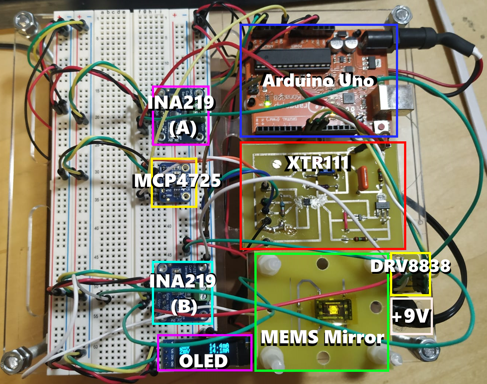5. Micromirror Testing:
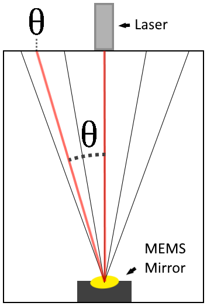The testing of the mirror had the aim of characterizing its deflection curve. The curve slope varies on each device, slightly deviating from the ideal 1º/mA. This is mainly caused by variations in the strength of each permanent magnet. It can also be caused by imperfections on the mirror’s torsion bar, leading to slightly non-linear recovering moments. It was also important to confirm that the mirror performance hadn't been altered by the gold coating process in which it was subjected to absolute vacuum and high temperatures. Demagnetization of the permanent magnet was a real posibility and a concern.
An experimental set-up was developed to accomplish this. The concept consisted of a protractor engraved onto a flat plate. The mirror had to be precisely placed at the same height as the origin vertex of the protractor, normal to the protractor plane. A collimated laser beam was located directly overhead the mirror, and aimed at its centre. The optical deflection angle is measured and plotted over the whole range of possible coil currents (± 15 mA), obtaining an empirical deflection curve.
This concept was developed into a CAD model on SolidWorks. The idea was to fabricate a frame that was able to hold the laser in place, and engrave the protractor angles on it. After some iterations and changes, the final design, a frame composed out of a five plates, was ready to manufacture. Each plate was designed with a saw pattern on the joints in order to assemble them into a “box”.
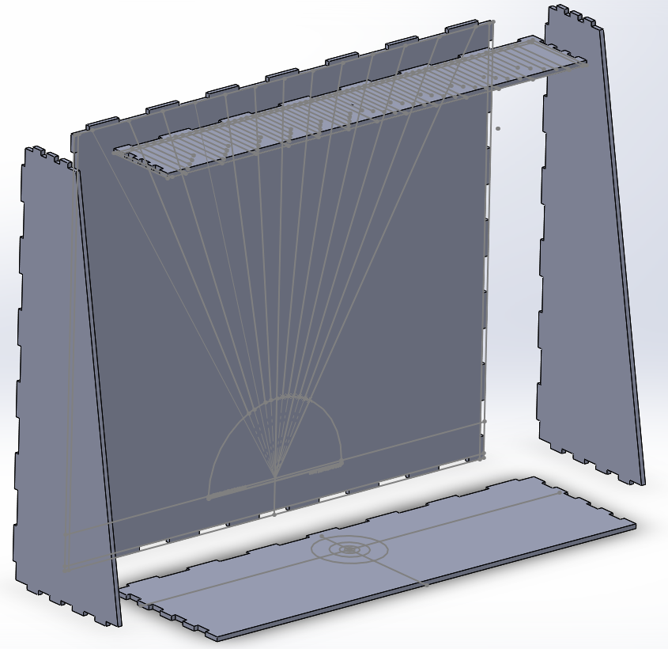 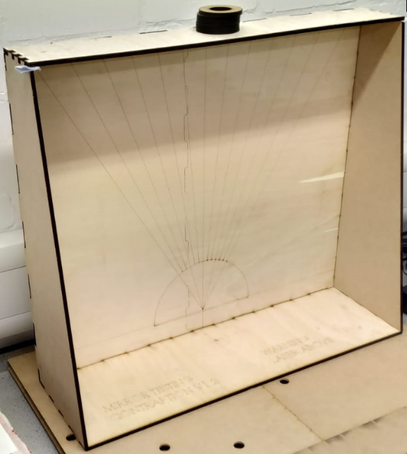 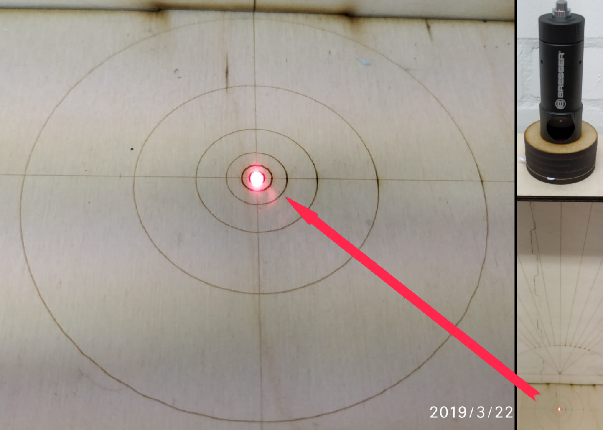To ensure test consistency, the same calibration procedure was performed before each test. The first step was to align the laser beam between the top and bottom plates. The laser source inclination with respect to the top plate was adjusted until the laser beam hit the target centre on the bottom plate.
The next step was to place the mirror in the path of the laser beam, and align it on the vertical axis. This was done by adjusting a set of four screws, until the top surface of the PCB was at the same height as the PCB height line on the wall. The third step was to adjust the device angle so that in the relaxed position, under no input, it reflected the beam back into the pinhole.
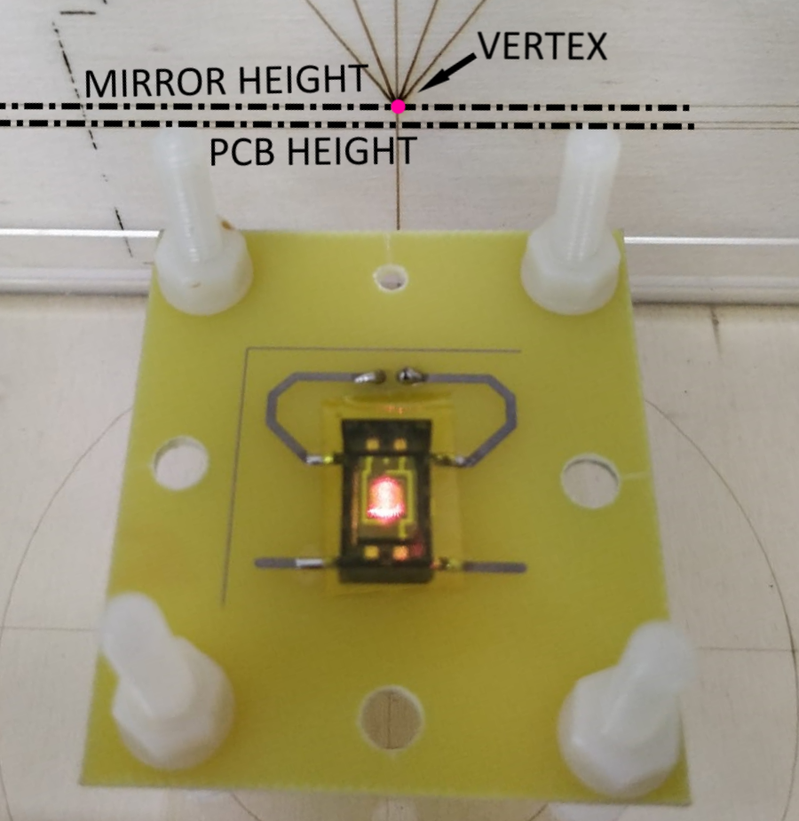 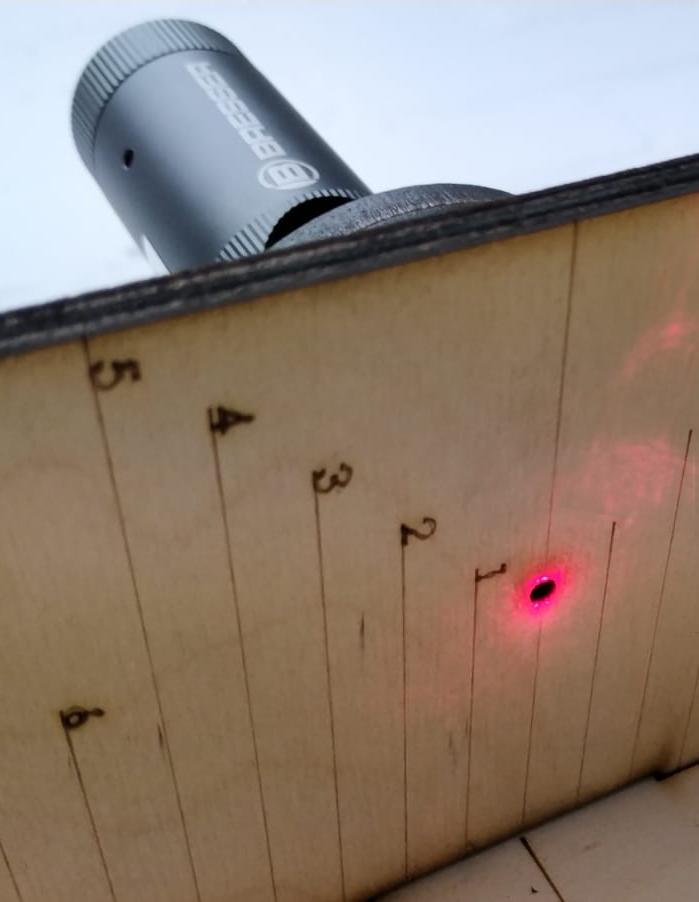To drive the mirror during these tests, the driver circuit developed was used. The H-bridge was employed to switch the mirror direction, and the coil current was measured with one of the INA219 current sensing modules. These have a resolution of 0.1 mA, meaning that the uncertainty due to the instrumentation is ± 0.05 mA.
The tests were a success, since the driver circuit performed exactly as expected and the mirror performance was found to closely match the expected curve for both forward and reverse directions:
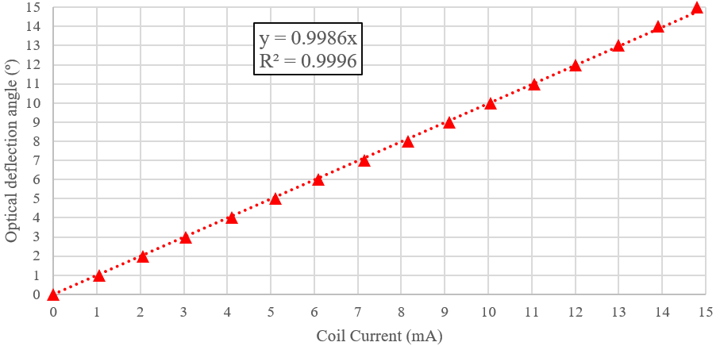 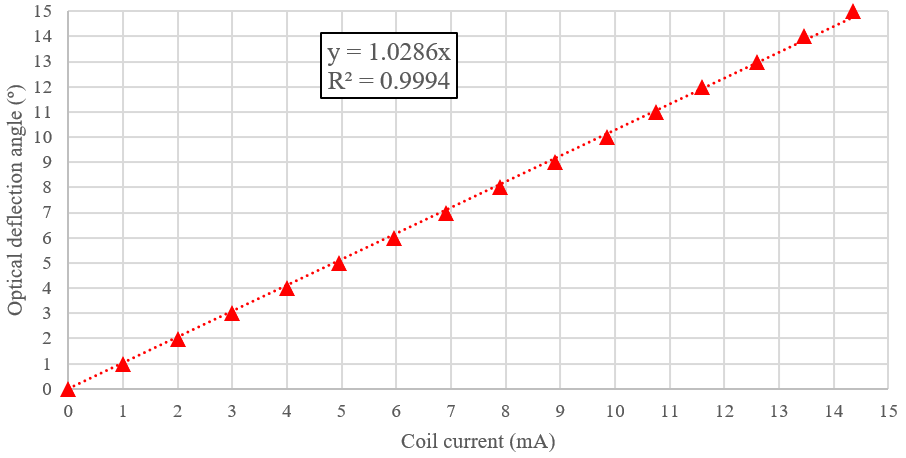6. Project Conclusions and Future Work:
The work carried out in this project has proven that an electromagnetically actuated MEMS micromirror could be employed as light switch on the miniaturized IR radiometer instrument. The mirror ambient temperature operation has been fully characterised, and its temperature dependence has been accounted for with corrections, providing reliable operation throughout the expected operating environment inside the microprobe.
The device was also presented to a harsh environment inside the PVD chamber, where it was subjected to absolute vacuum and high temperatures. It performed nominally after that. The quality of the coating produced was satisfactory, providing a good reflective surface.
The next logical step in this project would be to construct a prototype of the instrument, similar in disposition to the one developed in section 7, and test the mirror under varying ambient conditions. Improvements to the code could also be performed, such as implementing the corrections for magnet weakening and H-bridge drift. It would also be interesting to perform acoustical and vibrational testing of the micromirror. The manufacturer does not have data regarding this. This would be critical to determine the airworthiness of the instrument.